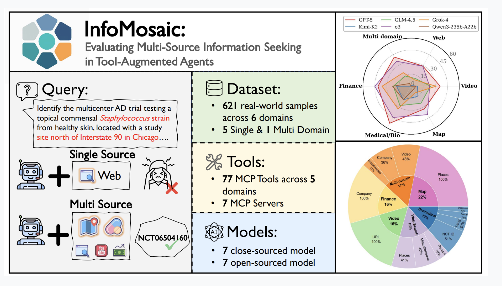
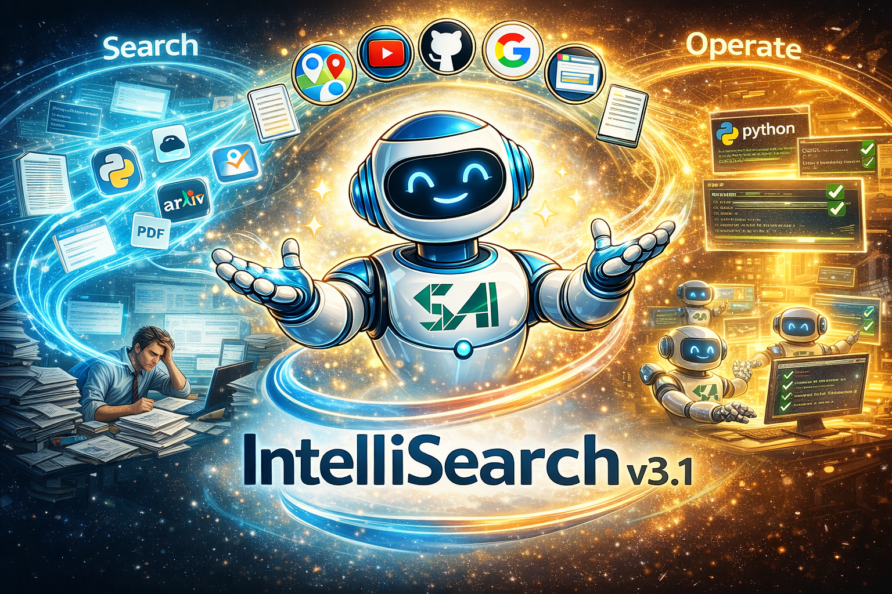
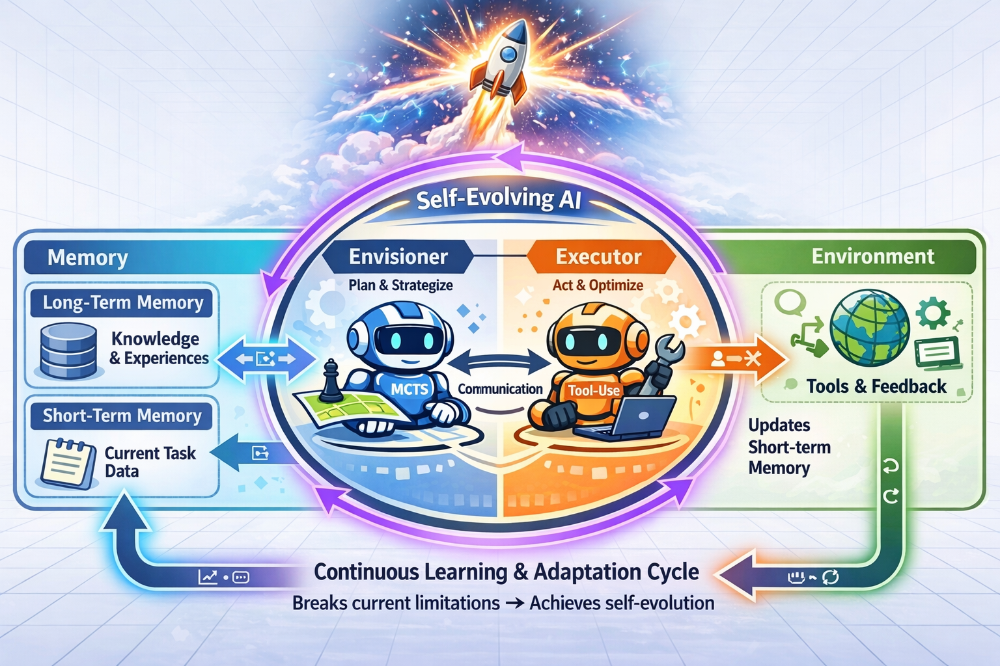

About Me
Xiyuan Yang (杨希渊) is now an undergraduate (sophomore) in School of Artificial Intelligence, Shanghai Jiao Tong University (SJTU-SAI). During his freshman year of study, he ranked SECOND of 62 in grades and received honors including the National Scholarship (5 scholarships in total). His research interests focus on Digital Agents with broad capability boundaries (Agentic Scaling Law) and Collaborative Multi-agent Intelligence. He joined the research group MAGIC in SJTU, under the supervision of Prof. Siheng Chen.
My research interests focus on exploring the Agentic Scaling Law for large language models in the Agent era, to expand the capability boundaries of language model agents in areas such as tool calling, reasoning generalization, and long-term memory. I also investigate multi-agent collaboration workflows and information optimization within collective intelligence. I believe the future world will be a world of agents.
Topics I'm currently interested in:
- Agentic Tool Calling and Agentic Memory Enhancement
- Multi-agent Systems and Multi-Agent Collaborations
- Domain-augmented Agents (Software Coding Agents, etc.)
Education

Shanghai Jiao Tong University
B.S. in Artificial Intelligence, School of Artificial Intelligence
2024 - 2028
GPA: 4.1/4.3 (Ranked 2 out of 62)
Score: 94.0/100
Scholarships: National Scholarship (first 3%), "Han Ying Ju Hua" Scholarship (15 per year), Zhiyuan Honor Scholarships (first 50%), SJTU Undergraduate Excellence Scholarship
High Graded Courses:
- Comprehensive Programming Practice: 100/100
- Probability and Statistics (Honor): 100/100
- Algorithm Design and Analysis: 100/100
- Numerical Analysis: 100/100
- Linear Algebra (Honor): 98/100
- Fundamentals of Programming (Honor): 98/100
- Fundamentals of ML, DL and RL: 98/100
Experience
MAGIC Lab
Undergraduate Research Assistant
Advisor: Prof. Siheng Chen
2024 - Present
Publications


Projects

IntelliSearch V3.1: Unifying Search, Empowering Action for Tool Calling Autonomous Agents

E³-ML-Master: Advanced Envisioning-Executing for Goal-Driven Self-Evolved ML-Master
AlphaBuild: Generating Formulaic Alphas on a Wider Range of Stock Data
SAI Community: The first open-source SAIer's forum for courses, careers and future
Technical Blogs
Active GitHub committer with 30+ open-source repositories and 1500+ commits.
Maintainer of Xiyuan Yang's Technical Blog. I regularly publish technical content focusing on computer science and AI. To date, I have authored over 120 articles with a cumulative word count exceeding 450,000 words.
Skills
Programming Languages
Tools
Python Modules
ML & DL
- Deep learning architectures
- Model training techniques
- Reinforcement learning
LLM & Agents
- Large Language Models
- Post training techniques
- Multi-agent frameworks
Languages
- Chinese (Native)
- English (CET-6: 584)